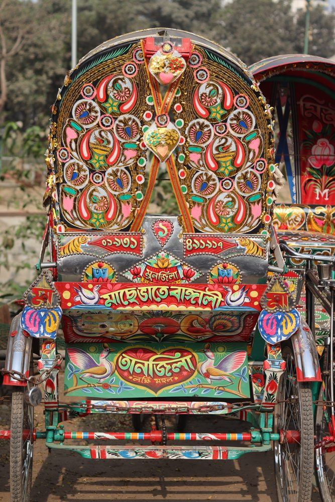
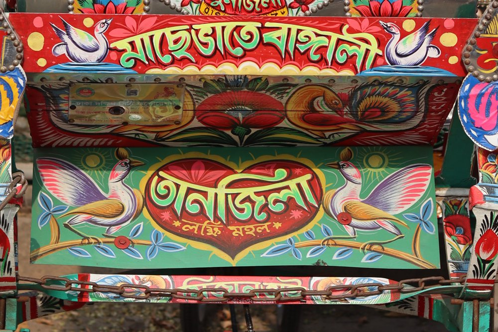

Bengali culture is known for its language, music, literature and festivals. Pohela Boishakh, the Bengali New Year, is celebrated every April with fairs and colourful processions.
Everyday life also has its own art: every rickshaw is painted by hand, with birds, flowers and Bengali slogans on each panel.

